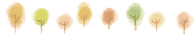

 2014年 2月 食べられない！
第２２回 日本小動物歯科研究会症例検討
本症例検討会は、毎年開催され、今年、２０周年を迎えられました。
獣医師が、動物の歯科治療について学ぶ場は、本当に少なく、その中でも、本症例検討会は、貴重な情報を得られる数少ない勉強の場です。
今年は、「臨床的観点からの口腔内細菌検査意義」の題で、大学病院でおこなわれている口腔内細菌検査の実際と主に歯周病病態について、報告させていただきました。
当院の歯科治療においても、細菌検査をおこなっております。
歯周病や口内炎の症状ある患者さんからは、時々、毒素や酵素を産生し、それらによって、とても強い組織破壊をおこす細菌が検出されます。
とても、怖いことです。
たかが歯と言われてしまうこともありますが、『されど歯』なのです！
これからも、より良い歯科治療が受けられるよう、精進してまいります
会場となった新宿京王プラザからの景色です。中央に、ちいさくスカイツリーが見えました。